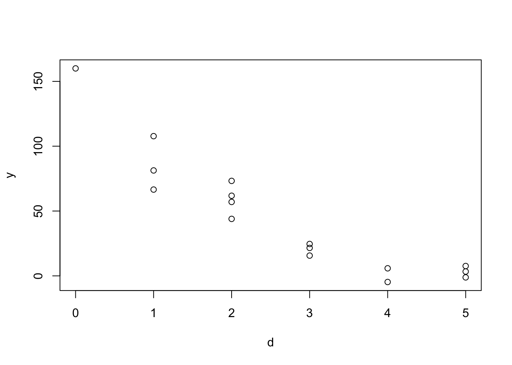
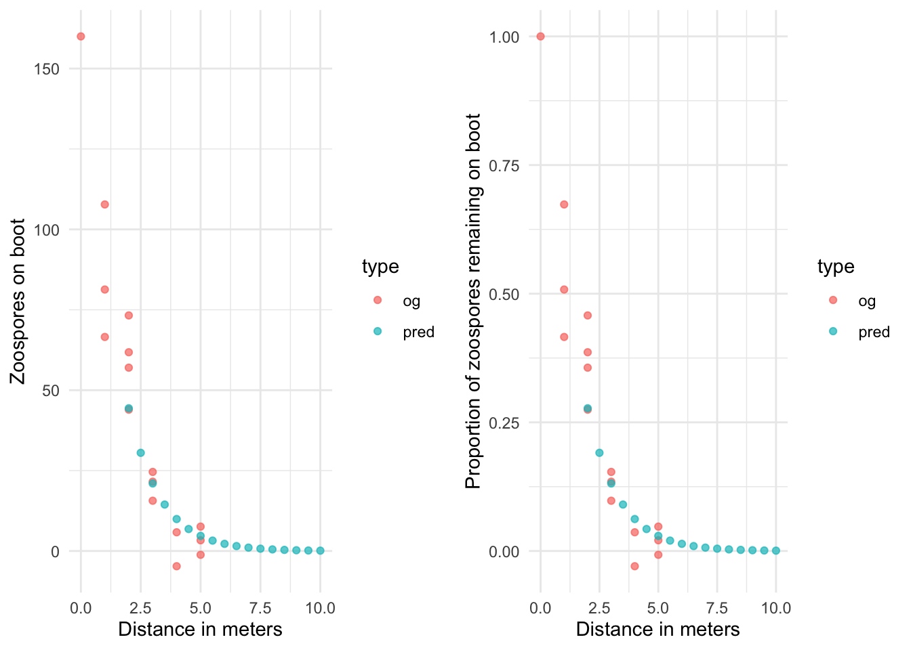
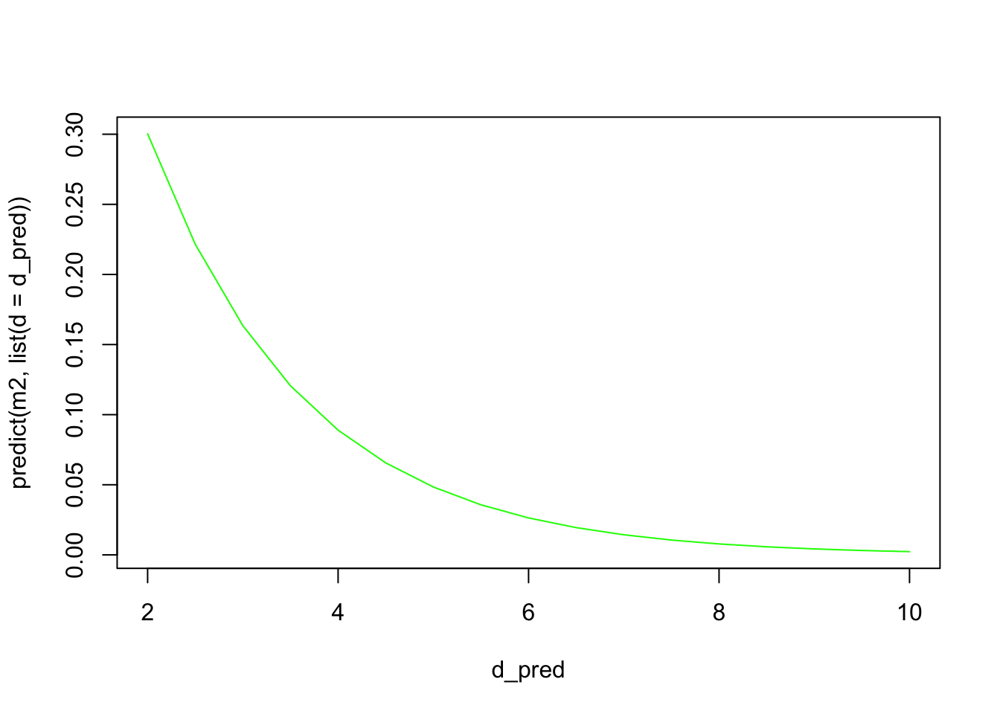

library(tidyverse)Dispersal kernels
When you have available data, then the usual goal is to fit an equation (or model) that describes the probability of dispersal as a function of distance. In this case, we are thinking of human mediated dispersal (HMD) of a specific fungal pathogen.
From what I understand, experiments were carried out to calculate the amount of pathogen that gets dispersed in hiking books after being exposed to an initial inoculum. The starting inoculum has a concentration of 10^5 zoospores in water. Boots step on the inoculated water source, and walk for s meters, where s=1,2,...,5. In this example we are trying to quantify the dispersal kernel for human mediated spore dispersal.
The main question here is over what range of distances can fungal spores be dispersed by humans on their boots? And what function would describe the relationship between concentration of those spores and distance walked.
From the initial meeting with Sarah, I understood that we start with 10^5 zoospores in a water vessel, and essentially estimate a pick up rate. This means that data points at distance zero (d=0) are a proportion of the initial starter. From here, we would like to estimate the proportion of zoospores left on the shoe vector, and thus the proportion of zoospores transferred to the soil as distance from the starter increases.
A common approach to this is to use an exponential model with:
f(d) = a \text{e}^{-bd}
where the proportion of zoospores left on the boot (f(d)) is a function of the initial number of zoospores at the starting point (in this case the pick up rate as a proportion of the total at distance d=0). We assume that zoospores are transferred from the boot to the soil at a constant rate b, as shown in the equation above.
For algebra reasons:
y = a \text{e}^{-bx} \\ log(y) = log(a \cdot \text{e}^{-bx}) \\ log(y) = log(a) + log(\text{e}^{-bx}) \\ log(y) = A - bx
To fit this model in R, you can just fit a linear model, where your response variable is log(y), with an intercept A, and a slope -b.
As an example, let’s generate some random data from the perspective of your experiment. The starting point
# From what I remember these seemed to be the average values
# for the number of zoospores
# recovered from the boot
y_mean <- c(160, 100, 60, 20, 5, 2)
y_sd <- c(0, 30, 10, 5, 5, 5)
# And these are the number of data points for each of the distances
d <- c(0,1,1,1,2,2,2,2,3,3,3,4,4,5,5,5)
#simulate some data
y <- NULL
for(i in 1:length(d)){
val_d <- d[i]
gen_y <- rnorm(1, mean = y_mean[val_d+1], sd = y_sd[val_d+1])
y[i] <- gen_y
}
plot(d, y)
We have some simulated data now, and now will fit an exponential function to it:
# Save my simulated data as an object
my_df <- data.frame(d = d, y = y)
# The model looks at the proportion of zoospores that remain on the boot
pick_up <- my_df$y[which(my_df$d==0)] # number of zoospores picked up from source
my_df %>%
mutate(prop_y = y/pick_up) -> my_df
# plot(my_df$d, my_df$prop_y)
# Fit the function as a linear model:
m1 <- lm(log(prop_y) ~ d, data = my_df)Warning in log(prop_y): NaNs producedsummary(m1)
Call:
lm(formula = log(prop_y) ~ d, data = my_df)
Residuals:
Min 1Q Median 3Q Max
-0.53441 -0.27501 0.00799 0.22723 0.50105
Coefficients:
Estimate Std. Error t value Pr(>|t|)
(Intercept) 0.21420 0.17633 1.215 0.248
d -0.74832 0.06234 -12.003 4.82e-08 ***
---
Signif. codes: 0 '***' 0.001 '**' 0.01 '*' 0.05 '.' 0.1 ' ' 1
Residual standard error: 0.3382 on 12 degrees of freedom
(2 observations deleted due to missingness)
Multiple R-squared: 0.9231, Adjusted R-squared: 0.9167
F-statistic: 144.1 on 1 and 12 DF, p-value: 4.821e-08We can look at the results from this model and see that the intercept (a) is giving us the starting value for d=0, for the proportion of zoospores remaining on the boot. Considering this is in a log scale, we transform back to get the actual proportion:
exp(m1$coefficients[1])(Intercept)
1.23887 But we also have to remember that this is a proportion of zoospores remaining given the initial pickup rate. So to get an actual number of zoospores at a certain distance, in this case d=0, we have to multiply by the initial pick up rate and we get
exp(m1$coefficients[1]) * pick_up(Intercept)
198.2193 as the number of zoospores picked up by the boot at the source. This model assumes a constant decay rate -0.7483181, which corresponds to b.
We can use these coefficients to predict the proportion of zoospores remaining on the boot at any given distance d. For example:
# predictions vector
d_pred <- seq(from = 2, to = 10, by = 0.5) # in meters
# Use the model to generate predictions for these new distance values
y_log_pred <- predict(m1, list(d = d_pred))
# transform back to get proportions
y_pred_prop <- exp(y_log_pred)
# transform to number of zoospores using the initial pick up rate
y_pred<- y_pred_prop * pick_up
# Get one data frame to visualize
pred_df <- data.frame(d = d_pred, y = y_pred, prop_y = y_pred_prop, type = "pred")my_df %>%
mutate(type = "og") %>%
bind_rows(pred_df) -> combined_df
combined_df %>%
ggplot(., aes(x = d, y = y, color = type)) +
geom_point(alpha = 0.7) +
theme_minimal() +
labs(y = "Zoospores on boot", x = "Distance in meters") -> nzoos_fig
combined_df %>%
ggplot(., aes(x = d, y = prop_y, color = type)) +
geom_point(alpha = 0.7) +
theme_minimal() +
labs(y = "Proportion of zoospores remaining on boot", x = "Distance in meters") -> prop_fig
library(cowplot)
plot_grid(nzoos_fig, prop_fig, ncol = 2)
We can also fit this using nonlinear least squares with the same starting dataset:
slice_sample(my_df, n = 6) d y prop_y
1 2 73.243054 0.45776909
2 3 21.550740 0.13469212
3 3 24.587668 0.15367292
4 4 -4.735303 -0.02959564
5 3 15.629097 0.09768185
6 1 107.748687 0.67342930m2 <- nls(prop_y ~ I(a * exp(b * d)), data = my_df, start=list(a=1, b=0))We can also do a prediction for the same predicted distance values as before:
plot(d_pred, predict(m2, list(d = d_pred)), col = "green", type = "l")
summary(m2)
Formula: prop_y ~ I(a * exp(b * d))
Parameters:
Estimate Std. Error t value Pr(>|t|)
a 1.01375 0.07428 13.65 1.77e-09 ***
b -0.60830 0.06068 -10.03 9.06e-08 ***
---
Signif. codes: 0 '***' 0.001 '**' 0.01 '*' 0.05 '.' 0.1 ' ' 1
Residual standard error: 0.08335 on 14 degrees of freedom
Number of iterations to convergence: 7
Achieved convergence tolerance: 2.29e-06And calculate some goodness of fit values:
(rss.p <- sum(residuals(m2)^2)) # Residual sum of squares[1] 0.09725714(tss <- sum((my_df$prop_y - mean(my_df$prop_y))^2)) # Total sum of squares[1] 1.2216591 - (rss.p/tss) # R-squared measure[1] 0.9203893This R-squared measure tells you how much of the variation in the data is explained by your independent variable in the regression model. In our case, it tells us 92% of the variation in the proportion of zoospores remaining on the boot is explained by the distance variable.
To wrap up, if we consider the model:
y = a\text{e}^{-bx}
where y is the proportion of zoospores that remain on the boot and x is the distance in meters from the source of the pathogen, then a tells us the starting number of zoospores picked up by the boot at the source, and b tells us the rate at which zoospores are transferred from the boot to the soil.
If we use the second model’s values, then we can ask the question, what proportion of zoospores would remain on the hiker’s boot after walking for 20 meters?
a <- summary(m2)$coefficients[1]
b <- summary(m2)$coefficients[2]
get_prop_y <- function(x, a, b){
a*exp(b*x)
}
get_prop_y(20, a, b)[1] 5.275684e-06this should be the same result using the predict() function:
predict(m2, list(d = 20))[1] 5.275684e-06